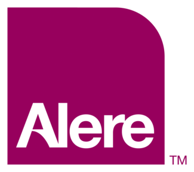

Documentation Specialist-Automation December 2015 - Present Genentech, Inc. (Contracted through ValSpec, Inc.) Oceanside, CA
Create, review, and execute computer systems validation and qualification testing (IQ, OQ, PQ)
Design, commissioning, qualification and validation of computer systems hardware and software throughout the software development lifecycle
Validate DeltaV procedures, SQL stored procedures, queries and webparts for Syncade MES
Create, review, modify and control User Requirements Specifications, Criticality Assessments, Risk Assessments, Requirements Traceability Matrices, Functional Specifications, Design Specifications and diagrams/drawings for new and existing computer systems
Collaborate with cross-functional teams on planning and execution of activities to meet on time startup and return-to-service of impacted software and hardware
Use of Trackwise Change Management, Microsoft Office Suite, Google Docs, Google Drive, STATURE, Sharepoint, Adobe Acrobat Pro, Condor EDMS, Emerson Syncade MES, and Emerson DeltaV PCS
Experience with GMP, GAMP 5, 21 CFR Part 11, 210, 211 & 820 and FDA/EMA regulations.
Production Chemist II-Antibody Conjugation April 2013 - November 2015 Biolegend, Inc. San Diego, California
Completed reactions to conjugate fluorescent dyes to antibodies and other primary amines.
Utilized spectrophotometry to determine protein and dye concentration in solution to calculate reaction progress and adjustments for final bottling
Proficient in size-exclusion and ion exchange chromatography to separate product from reaction mixture, and isoelectric focusing gel electrophoresis to determine conjugate fraction purity
Performed conjugation reactions such as thiol-disulfide exchange reduction and succinimidyl ester linking, including PE, APC, PerCP complexes, Alexa Fluor variants, and fluorescein isothiocyanate complexes
Qualified trainer with experience in document change and engineering change requests
Operated under ISO 9001:2008 and 13485:2003 standards

Quality Control Technician July 2012 - April 2013 Alere, Inc. (Contracted through Biophase, Inc.) San Diego, California
Performed quality control for the manufacture of the Triage line of diagnostic medical devices
Reviewed batch records to determine lot disposition
Initiated and tracked CAPA reports
Analyzed data for production lots to determine pass/fail rates based on quality control testing results
Operated under ISO 9001:2008 and ISO 13485:2003 standards in an FDA regulated facility